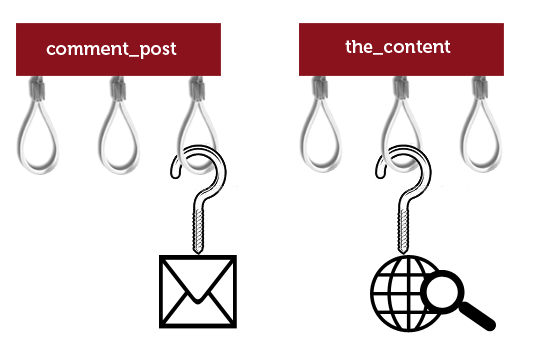

Qui suis-je ?
Sébastien Rancoud
Développeur Front/Back depuis 7 ans
Aujourd'hui Lead Developpeur chez Steaw, agence digitale
Wordpress
CMS orienté publishing
1 site sur 5 dans le monde
Stats W3techs avril 2014 :
sans CMS 63.7% - Wordpress 22% - Joomla 3.1% - Drupal 1.9%
Pré-requis technique
Un hébergement supportant :
- PHP 5.2.4 minimum
- Mysql 5.0 minimum
C'est tout
Installation
- Téléchargez sur http://fr.wordpress.org
- Décompressez l'archive
- Mettez les fichiers sur le serveur
- Visitez votre site pour lancer l'assistant
- Accès base de données
- Création compte admin
- Email pour notifications
Administration
- Thèmes
- Articles
- Tags
- Pages
- Commentaires
- Paramétrages
Thème / Template
Thème / Template
Basique
Edition couleurs
Edition menu
Ajout widgets
Evolution : Créer son thème
Template différent par page
Paramètrage personnalisé
Article
Basique
1 titre et 1 texte libre
1 image à la une
Horodatage
Evolution : Custom Post
Entrée administration supplémentaire
Template différent
Ajout de custom fields
Meta données
Basique
Evolution : Custom Fields
Rajout de champ de formulaire automatique
Avoir un template structurant (qui exploite les nouveaux champs)
Tags et catégories
Basique
Catégorie
Tag
Evolution : Custom Taxonomy
Groupe différent de Catégorie
Prisme de lecture différent
Plugins Populaires
- Akismet
- Google XML Sitemaps
- Contact Form 7
- WordPress SEO by Yoast
- All in One SEO Pack
- Jetpack by WordPress.com
- etc...
Hook
Quand ne pas utiliser Wordpress
E-commerce
Forum
CRM
Wordpress pour les sites à fort traffic ?
OUI
Plugin de cache (W3 Total Cache, WP Super Cache)
Varnish
Questions ?
Sources
- Logo Wordpress : Wikipedia
- Image Thème / Template : La Réclame
- Image Hook : WPNotlari
{kind=link}